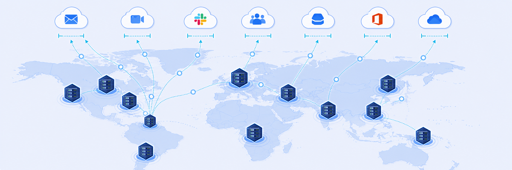
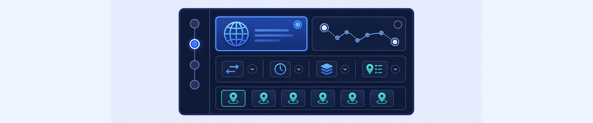
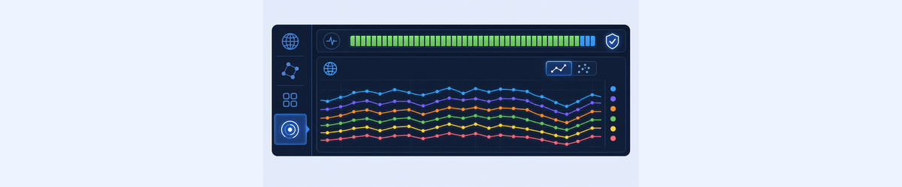

Lab 12: ZDX Hosted Monitoring
LAB 12
Scenario: Your organisation wants to monitor key SaaS applications from Zscaler data centers worldwide, independent of end-user devices. Configure and review Hosted Monitoring probe data.

THINK FIRST · HOSTED PROBE MONITORING
End-user ZDX data tells you what users experience. Hosted probes tell you what the application looks like from the cloud — without any user involved. If Hosted probes show a problem but end-user ZDX scores are good, the issue is specific to that user’s location or device.
- End-user ZDX scores are based on measurements from the Zscaler Client Connector on a user’s device. Hosted Monitoring probes measure from Zscaler data centers. If Hosted Monitoring shows an application is slow but end-user ZDX scores are fine, what does this tell you about where the problem is?
- A Hosted Probe can be either a Web Probe or a Cloud Path Probe. What is the key difference in what they measure, and when would you choose each type?
- The Probe Run Details page shows Redirect Time, DNS, TCP, SSL Handshake, Server Response, and Page Fetch Time in milliseconds. If Server Response Time is 1142ms but DNS is only 100ms, where would you focus your investigation?
Task 12.1: View the Configuration of Hosted Monitoring
1 Browse Hosted Probe Collections
- Navigate to Configuration › Zscaler Hosted Probes.
- Review the Collections in the left panel: Network, Websites, Apps, API, SLA.
- Click on each collection to see the probes it contains (Type, Name, Host, Status, Protocol, Locations, Alert Rules, Frequency).
- Click the view icon on any probe to open its configuration wizard.
- Navigate through the wizard steps: Select a Probe Type (Web or Cloud Path), Configure, Additional Parameters (Protocol, Run Frequency, Hop Count, Interval, Zscaler Hosted Locations), Add Alerts.
- Click Cancel to close without saving.

My Questions
My Notes
Task 12.2: View the Hosted Monitoring Reports
2 Analyse Hosted Probe Metrics
- Navigate to Analytics › Zscaler Hosted Monitoring.
- In the left panel, browse the probe list by collection (Network, SLA, Apps, API, Websites).
- Select a Web Probe (e.g. Box (Web) from the SLA collection) and view the Availability and Page Fetch Time graphs (30 Days).
- Click and drag on the Availability graph to zoom in on a time range.
- Use the dropdown on the PFT graph to add additional metrics (e.g. DNS).
- Switch to the scatter graph view. Click a data point and click View Details to see the Probe Run Details page with key metrics (Redirect Time, DNS, TCP, SSL Handshake, Server Response, Page Fetch Time).
- Use the Zscaler Hosted Locations dropdown on the Probe Run Details page to compare results from different data centers.
- Navigate back to Hosted Monitoring and select a Network Probe (e.g. Box (Network)). View the End-to-End Latency and add Packet Loss from the dropdown.

My Questions
My Notes
MENTAL NOTE
Hosted Probes = synthetic tests from Zscaler DCs, not user devices. Collections: Network, SLA, Apps, API, Websites. Probe types: Web (PFT, DNS, SSL, availability) or Cloud Path (E2E latency, packet loss). Probe Run Details: Redirect + DNS + TCP + SSL + Server Response + PFT in ms. Key insight: Hosted poor + end-user fine = Zscaler DC/routing issue. Hosted fine + end-user poor = user-side problem.